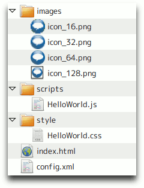
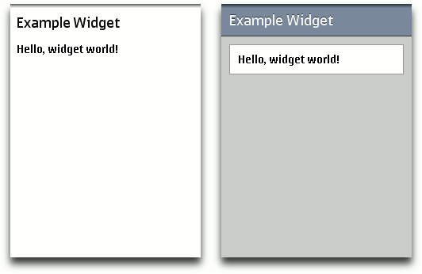
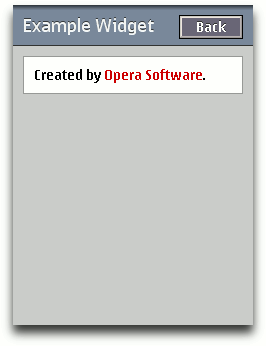

Opera Mini Widgets: an introductory tutorial
Note: the ability to run Opera Mini widgets on your phone is a B2B product delivered only to Vodafone at this time.
Introduction
Opera Mini widgets - like web pages viewed in Opera Mini - are rendered on the server. In other words, when the user accesses a widget's URL, it's installed not on the client device but completely on the server. A small binary file is then sent to the user for viewing. This provides great performance benefits but from a developer's point of view, one of the trade-offs is that JavaScript support is slightly more limited than with client-side widgets and web applications. For this reason, it's best to develop a simple widget to start with and gradually add functionality for the best user experience.
Opera Mini widgets use the W3C Widget Packaging and Configuration specification, which means they can consist of HTML, CSS and JavaScript files, image files and other assets, and a configuration file in XML format. The only files that are essential in a widget are this configuration file, called config.xml, and a starting page, usually called index.html. All other files can be created and placed in directories as you wish, just as with a regular website, so the file structure of a typical widget will look something like figure 1:

Figure 1: Opera Mini Widgets file structure.
In this tutorial, we're going to make a basic "Hello, world!" widget. Its functionality will be very simple but it will demonstrate how to create a flexible widget that will display nicely on a variety of screen sizes - an important consideration as internet-connected devices become more and more popular and varied. Our starting point will be the two essential widget files, as mentioned above.
Your configuration file
For our widget's configuration file, we can use the example in the W3C specification as a template. There are several non-essential items we can remove for simplicity, so, with a few details updated, we end up with this:
<?xml version="1.0" encoding="UTF-8"?>
<widget xmlns="http://www.w3.org/ns/widgets"
id="http://www.opera.com/exampleWidget"
version="1.0"
height="208"
width="176"
viewmodes="fullscreen">
<name short="Example">
Example Widget
</name>
<description>
A simple example of an Opera Mini Widget.
</description>
<author href="http://www.opera.com/">Opera Software</author>
<icon src="images/icon_128.png" width="128" height="128"/>
<icon src="images/icon_64.png" width="64" height="64"/>
<icon src="images/icon_32.png" width="32" height="32"/>
<icon src="images/icon_16.png" width="16" height="16"/>
</widget>As you can see, we have simply added details such as a name and description of the widget, as well as specifying an icon. In this case we're using a PNG file I created with the Icon Creator desktop widget, although any graphics software could be used. You can also specify a number of icon sizes in descending order to ensure the best resolution is chosen for display.
When you are done with your configuation file, you should save it in an empty directory somewhere on your hard drive as config.xml.
As part of our Widgets SDK we have an informative article on how to create icons in different sizes.
Your starting page
If you choose a name other than index.html for your starting page you must specify the name in the config.xml file using a content element, like so:
<content src="start-page.html"/>Therefore, simply creating a file called index.html is recommended for simplicity. For simplicity we're going to use HTML5, but of course XHTML and HTML 4 are also acceptable. There is nothing special about this file - it's just a basic web page. As this is a gentle introduction, we're going to display a simple message to the user:
<!DOCTYPE html>
<html lang="en">
<head>
<meta charset="utf-8">
<link rel="stylesheet" href="style/HelloWorld.css">
<title>Hello World Widget</title>
</head>
<body>
<header>
<h1>Example Widget</h1>
</header>
<div id="main">
<p>Hello, widget world!</p>
</div>
</body>
</html>As we're working with client-side web languages, we can use a browser to test and debug our widget initially. This also gives us the advantage of being able to use Opera Dragonfly, which is a development tool built-in to the Opera desktop browser. Once we have a working widget we can then fine-tune it on a mobile device before packaging it.
When you are done with your index file, save it in the same directory as your config.xml file.
Making it look like a widget
At this stage we have the basis of a widget but we should add a bit of CSS magic to make it look more appealing and usable. This is no different to the CSS you use in your websites which means that, like a website, you have to adapt to a variety of screen sizes. One way to approach this is to create a stylesheet for a minimum expected resolution and then use JavaScript to detect the available screen size and consequently edit the necessary CSS styles.
Alternatively, if you want to avoid JavaScript you could use use CSS3 media queries, which apply certain styles depending on the user's screen. This is explained in detail in our article covering cross-device development techniques. In this example, however, we're going to continue to keep things simple and make our CSS as naturally adaptive as possible. Things to remember when doing this are:
- Try to avoid using fixed font sizes. Use
emvalues instead. - Try to avoid using fixed values for width and height properties. Percentages are better.
- Avoid unnecessary images, particularly for buttons where a
buttonelement is better and can be styled to match your design.
Based on this, here's a sample CSS file that should work well on any size of screen. See Figure 2 for a screenshot of how it actually looks on a mobile device:
* {
margin:0;
padding:0;
}
body {
background:#ccc;
color:#000;
font-family:helvetica, arial, sans-serif;
}
header {
background:#789;
border-bottom:solid 1px #333;
color:#fff;
display:block;
padding:10px;
text-shadow:0px -1px 1px #333;
}
#main {
background:#fff;
border:solid 1px #999;
margin:10px;
padding:10px;
}
Figure 2: Our example widget before and after applying CSS.
Note: you can put your stylesheet anywhere you like inside the Widget directory, but the preferred convention is to put it inside a style directory.
Download the widget so far: HelloWorld_basic.wgt
Adding some interactivity
As good as HTML and CSS are, we want to make our Widget appear more interactive to our users, so we need to add some JavaScript. As mentioned earlier, there are some restrictions when pre-rendering widgets on a server but we are still able to use things like onclick and onchange events, setInterval timers and on-the-fly editing of styles and content. We'll use the latter in this example to create a button that shows an about page.
First, we'll continue editing our start page to add a button, some extra content and a link to the JavaScript file we're going to write - index.html now looks like this:
<!DOCTYPE html>
<html lang="en">
<head>
<meta charset="utf-8">
<link rel="stylesheet" href="style/HelloWorld.css">
<script src="scripts/HelloWorld.js"></script>
<title>Hello World Widget</title>
</head>
<body>
<header>
<h1>Example Widget</h1>
<button id="btn_header">About</button>
</header>
<div id="main">
<p>Hello, widget world!</p>
</div>
<div id="about">
<p>Created by <a href="http://www.opera.com/">Opera Software</a>.</p>
</div>
</body>
</html>In our CSS, not only do we need to style the button so that it suits the design, but we should also hide the text in our about page. This will be displayed later with JavaScript when the user clicks the button. The latest version of HelloWorld.css looks like this:
* {
margin:0;
padding:0;
}
body {
background:#ccc;
color:#000;
font-family:helvetica, arial, sans-serif;
}
a {
color:#c00;
}
header {
background:#789;
border-bottom:solid 1px #333;
color:#fff;
display:block;
padding:10px;
text-shadow:0px -1px 1px #333;
}
header h1 {
display:inline;
}
#btn_header {
background:#667;
color:#fff;
float:right;
padding:0.1em;
text-shadow:0px -1px 1px #333;
width:4em;
}
#main, #about {
background:#fff;
border:solid 1px #999;
margin:10px;
padding:10px;
}
#main {
display:block;
}
#about {
display:none;
}The missing step is the JavaScript, so let's look at this bit by bit. Firstly, we get the relevant elements from the DOM:
var main = document.getElementById('main');
var about = document.getElementById('about');
var btn_header = document.getElementById('btn_header');The next part is easy - we just add an event listener to the button that will fire a flip() function when it's clicked:
btn_header.addEventListener('click', flip, false);Lastly we create the flip() function and use it to show and hide both the main page and the about page. To keep the code clean I've made separate functions to display each page and change the text on the button:
function showMain() {
about.style.display = 'none';
main.style.display = 'block';
btn_header.textContent = 'About';
}
function showAbout() {
about.style.display = 'block';
main.style.display = 'none';
btn_header.textContent = 'Back';
}
function flip() {
if (main.currentStyle.display === 'block') {
showAbout();
} else {
showMain();
}
}Putting it all into a file which we'll call HelloWorld.js and making sure it executes after the widget has loaded, we have this:
window.addEventListener('load', function() {
var main = document.getElementById('main');
var about = document.getElementById('about');
var btn_header = document.getElementById('btn_header');
function showMain() {
about.style.display = 'none';
main.style.display = 'block';
btn_header.textContent = 'About';
}
function showAbout() {
about.style.display = 'block';
main.style.display = 'none';
btn_header.textContent = 'Back';
}
function flip() {
if (main.currentStyle.display === 'block') {
showAbout();
} else {
showMain();
}
}
btn_header.addEventListener('click', flip, false);
}, false);Note: As you may have guessed, the preferred convention for storing your scripts is to put them inside a script directory.

Figure 3: Our example widget showing the about page.
Excellent! Figure 3 shows the about page of our widget, which now has a flexible design and basic interactivity. Our configuration file is ready so we can finally turn it into a widget. Packaging is straightforward - we just zip up the files and directories we have created and then rename the resulting file with a .wgt extension. Our widget is complete!
Download the finished widget here: HelloWorld.wgt - try loading this article in Opera Mini and then following this link to see how it works in Opera Mini! Functionally, there is no difference between Opera Mini Widgets and any other W3C Widgets - it is just that the widgets are run on the server in the case of Mini, whereas they run on the client in other browsers.
If you are building up the widget yourself, now is the time to zip it up, change the file extension to .wgt, and test it out by making it available on the web somewhere, and pointing Opera Mini to its URL.
Note: You need to make sure you zip up your widget so that the files and directories that comprise it are in the root of the zip, and not inside a folder. To ensure this, make sure that you zip up the files inside your widget directory, and not the directory itself. Subtle, but it makes all the difference.
A word about the mobile development environment
I suggested earlier developing the widget initially in a desktop version of Opera. While this is convenient, it is no substitute for testing on hardware actually running Opera Mini. For this, using Opera Unite as a temporary web server is extremely effective and saves time compared to uploading your files to an external server. The steps are as follows:
- In the Opera desktop browser, start the Opera Unite Web Server application.
- In the
propertiesdialog box, specify the local directory that contains your widget. - Either set or remove the password for the web server, as you prefer.
- In the Opera Mini browser, open the web server URL. This can be found in the right-hand side of the web server admin page.
- Opera Mini should recognise the
config.xmlfile in your development directory and automatically load your files as a widget. To see any changes you make, simply reload the page in Opera Mini as you normally would.
Summary
I hope this has provided you with a foundation from which to develop, test and debug Opera Mini widgets. The example here is simple but demonstrates several key concepts, enabling you to use the example widget as a basic template to build upon and add features to. You can find many more tutorials and resources to help you on your way in the Opera Widgets SDK.
This article is licensed under a Creative Commons Attribution-Noncommercial-Share Alike 3.0 Unported license.
Comments
The forum archive of this article is still available on My Opera.
No new comments accepted.